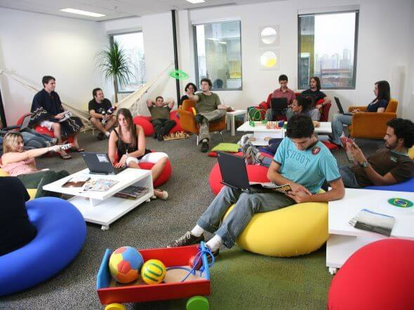

Nós da PWN, somos preocupados com o ambiente de trabalho, nossos funcionários e com o meio ambiente.
E como fazemos para que isso dê certo?
Nosso ambiente de trabalho, é construído pensando no conforto de nossos funcionários,
Por conta disso, cada funcionário tem um computador com ótimas configurações,
para que não passe estresse, enquanto trabalha, Mesas espaçosas e cadeiras gamers, para que se sinta confortável durante o dia a dia.
O funcionário tem direito a uma hora e meia de almoço, e ele pode aproveitar esse tempo comendo em nosso refeitório,
ou jogando vídeo game, baralho, sinuca, pebolim, assistindo tv, filmes e séries ou até mesmo lendo um livro,
e isso é possível, pois temos sala de jogos, sala de leitura, área de socialização etc.
Veja algumas fotos:

A gente realmente se preocupa com nossos funcionários, então criamos alguns planos para que facilite a vida dentro e fora da empresa:
Sabemos o quão difícil é trabalhar enquanto seu filho estuda, e por conta disso, pagamos uma escolinha particular perto da empresa, para
que seja mais fácil de busca-lo. E Crianças a partir de 7 anos e adolescentes de até 15 anos, tem direito a uma bolsa de estudos, paga
por nós, desde que tirem nota superior que a média, em uma prova disponibilizada pela empresa.
Nossa empresa se preocupa com o meio ambiente e estamos comprometidos com as ODS 2030 da ONU